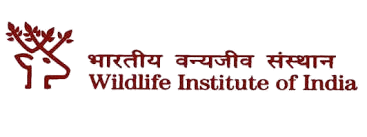
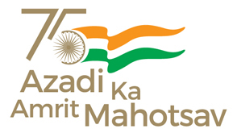
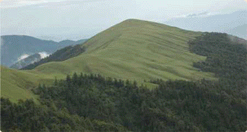
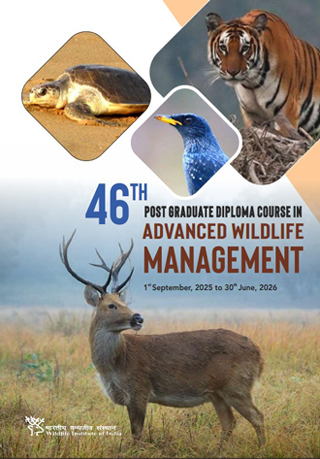

Thursday, 03 July, 2025


(An Autonomous Institution of the Ministry of Environment, Forest and Climate Change, Government of India)

An Autonomous Institution of the Ministry of Environment, Forest and Climate Change, Government of India
Established in 1982, Wildlife Institute of India
(WII) is an internationally acclaimed Institution,
which offers training program, academic courses
and advisory in wildlife research and management. The Institute is actively engaged
in research across the breadth of the country on
biodiversity related issues. The Institute's idyllic campus that has been carefully developed to create state of the art infrastructure encourages scholarly work.

Latest Events / News

This report provides a detailed assessment of ungulate
populations within India's key tiger habitats. It is structured
around four major tiger-bearing landscapes:
(A) Shivalik Hills and Gangetic Plains,
(B) Central India and Eastern Ghats,
(C) Western Ghats, and
(D) North East Hills and Brahmaputra Floodplains.
Download Report pdf (249 mb)
Plug-in: Download Adobe Acrobat Reader
populations within India's key tiger habitats. It is structured
around four major tiger-bearing landscapes:
(A) Shivalik Hills and Gangetic Plains,
(B) Central India and Eastern Ghats,
(C) Western Ghats, and
(D) North East Hills and Brahmaputra Floodplains.
Download Report pdf (249 mb)
Plug-in: Download Adobe Acrobat Reader

Download Brochure pdf (550 kb)
Announcement/Office Order pdf (425 kb)
Announcement/Office Order for SAARC pdf (320 kb)
Plug-in: Download Adobe Acrobat Reader
Announcement/Office Order pdf (425 kb)
Announcement/Office Order for SAARC pdf (320 kb)
Plug-in: Download Adobe Acrobat Reader

Download the brochure pdf (295 kb)
Download application form pdf (962 kb)
Download announcement letter pdf (765 kb)
Download application form pdf (962 kb)
Download announcement letter pdf (765 kb)
Shri Narendra Modi
(Hon'ble Prime Minister)
(Hon'ble Prime Minister)
Sh. Bhupender Yadav
(Hon'ble Minister)
(Hon'ble Minister)
Shri Kirti Vardhan Singh
(Hon'ble Minister of State)
(Hon'ble Minister of State)
Governance
-------------------------------
Professional Support
-------------------------------
Cells
-------------------------------
Research
-------------------------------
Researchers
-------------------------------
Publication
-------------------------------
Faculty Members
-------------------------------
M-STrIPES
-------------------------------
Tiger Reports
-------------------------------
Lion ID
-------------------------------
M.Sc. Students
-------------------------------
Ph.D Students
-------------------------------
Officer/Staff
-------------------------------
Trainees
-------------------------------
Alumni Search
-------------------------------
India National Committee- IUCN
-------------------------------
Pashmina Certification Centre
-------------------------------
WII-Category 2 Centre
-------------------------------
Antarctica Program
-------------------------------
DST-NMSHE
-------------------------------
BIOFIN
-------------------------------
Endangered Species Recovery Programme
-------------------------------
Biodiversity Conservation and Ganga Rejuvenation
-------------------------------
NMCG-WII Ganga Biodiversity Conservation Initiative - Phase II
-------------------------------
GATI Project
-------------------------------
Jalaj - Connecting River and People to Realize Arth Ganga
-------------------------------
DST Technology Intervention for Mountain Ecosystem -LEARN
-------------------------------
Management Effectiveness Evaluation (MEE)
-------------------------------
NRCD-WII Project
-------------------------------
Related Links
-------------------------------
Calendar 2025
-------------------------------
Journal of Wildlife Science
-------------------------------
Copyright Policy | Disclaimer | FAQ | Help | Hyperlinking Policy | Privacy Policy | Terms & Condition | Website Policies | Accessibility Options |
Accessibility Statement |
Copyright © 2025. All Rights Reserved
This is the official website of Wildlife Institute of India, Dehradun (WII), an Autonomous Institution of the Ministry of Environment, Forest and Climate Change, Govt. of India
Website content, hosted & maintained by Wildlife Institute of India, Dehradun
Accessibility Statement |
Copyright © 2025. All Rights Reserved
This is the official website of Wildlife Institute of India, Dehradun (WII), an Autonomous Institution of the Ministry of Environment, Forest and Climate Change, Govt. of India
Website content, hosted & maintained by Wildlife Institute of India, Dehradun